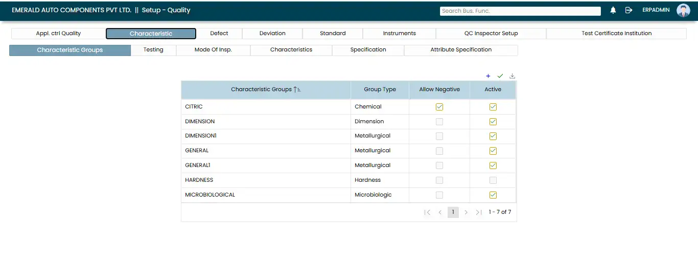

<div data-category="Quality control Management" data-title="Characteristics Groups" data-updated="December 01, 2025" data-contributors="RoadmapIT" data-breadcrumb="Home,Quality control Management,Characteristics Groups">
  <div class="page-content">
    <p>The Quality Characteristics Groups can be defined in this screen. Characteristics groups can be added, modified, and disabled based on business requirements.</p>
    <h5>Navigation path:</h5>
    <p class="fs-6">Quality Control \ Setup \ Setup – Quality</p>
    <!-- Create Characteristics Group -->
    
    <h2>Characteristics Groups:</h2>
    <ul style="list-style-type: none; align-content: center">
      <li class="mouse-icon">Click the add icon to create a new Characteristics Group.</li>
      <li class="mouse-icon">Enter the Characteristics Group description.</li>
      <li class="mouse-icon">Choose the Group Type.</li>
      <li class="mouse-icon">
        Click
        <i class="bi bi-check-lg fs-4 mx-1 text-success"></i>
        to save.
      </li>
    </ul>
    <!-- Modify Characteristics Group -->
    <h2>Modify Characteristics:</h2>
    <ul style="list-style-type: none; align-content: center">
      <li class="mouse-icon">Select the required Characteristics Group.</li>
      <li class="mouse-icon">Make the necessary changes.</li>
      <li class="mouse-icon">
        Click
        <i class="bi bi-check-lg fs-4 mx-1 text-success"></i>
        to save.
      </li>
      <li class="mouse-icon">Modification is applicable only before transactions are created.</li>
    </ul>
    <!-- Disable Characteristics Group -->
    <h2>Disable Characteristics:</h2>
    <ul style="list-style-type: none; align-content: center">
      <li class="mouse-icon">Only unused Characteristics Groups can be disabled.</li>
      <li class="mouse-icon">Select the Characteristics Group.</li>
      <li class="mouse-icon">Disable the Active flag.</li>
    </ul>
  </div>
</div>